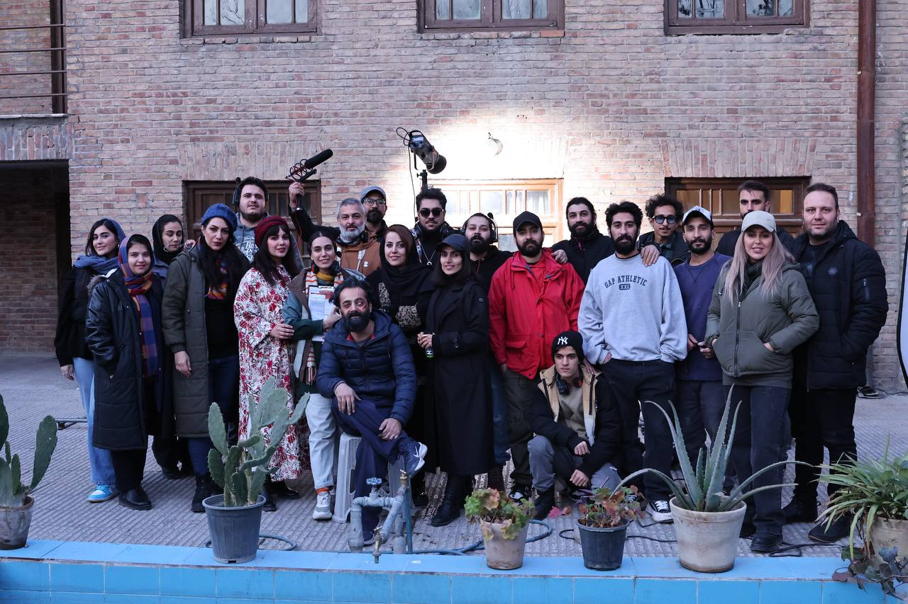

فیلمبرداری فیلم کوتاه «ماندالا» به نویسندگی و کارگردانی بهنام خسروی به پایان رسید و کار تدوین و پستولید این اثر آغاز شد؛ مرحلهای که در فیلمسازی مستقل، اغلب به همان اندازه فیلمبرداری در شکلگیری هویت نهایی اثر تعیینکننده است.
با پایان فیلمبرداری، تیم سازنده وارد مرحله تدوین و آمادهسازی نسخه نهایی فیلم برای ارسال به جشنوارههای بینالمللی شد. بهنام خسروی که خود مسئولیت تدوین فیلم را نیز بر عهده داشت، در این مرحله تلاش کرد تا ریتم روایت و فضای بصری فیلم را با مضمون هویت و فراموشی موجود در فیلمنامه هماهنگ کند؛ فرآیندی که به گفته او، نیازمند بازبینیهای مکرر و حذف و اضافه کردن دقیق نماها برای رسیدن به فرم فشرده و نمادین نهایی فیلم بود.
تدوین یک فیلم کوتاه، برخلاف تصور رایج، همیشه فرآیندی ساده و کوتاه نیست؛ بهویژه وقتی فیلم بر پایه ریتم آرام و فضاسازی بصری بهجای دیالوگمحوری بنا شده باشد. در چنین آثاری، هر تصمیم درباره طول یک نما یا ترتیب توالی صحنهها، تاثیر مستقیمی بر نحوه درک مخاطب از داستان دارد؛ موضوعی که در مورد «ماندالا» و مضمون لایهلایه آن اهمیت دوچندانی داشت.
پس از تکمیل تدوین، نسخه نهایی «ماندالا» برای ارسال به جشنوارههای بینالمللی آماده شد؛ مسیری که در نهایت این فیلم کوتاه ایرانی را به جایزه بهترین فیلم از Accolade Global Film Competition، نامزدی بهترین کارگردانی در دهمین جشنواره بینالمللی فیلم TINFF کانادا، حضور در جشنواره بینالمللی فیلم پونه هندوستان و جایزه Golden Standard Award از Stay Gold Film Festival رساند.
تیم سازنده «ماندالا» پایان فیلمبرداری و آغاز پستولید را نقطه عطفی در مسیر این پروژه دانستند؛ نقطهای که از آن پس، تمرکز تیم از تولید میدانی به آمادهسازی فیلم برای معرفی به مخاطبان بینالمللی منتقل شد. تیم مستر شورتفیلم این مسیر را در گزارشهای بعدی خود دنبال کرده است.